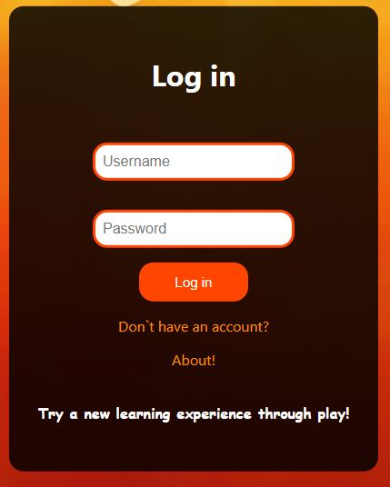

Abstract
FrOW (Fruits On The Web) este un joc Web educativ cu scenariu, miza si conditii de victorie/infrangere stabilite de echipa destinat elevilor din clasele primare.
Introducere
Scopul joculețului este unul educativ si ofera elevilor din clasele primare ocazia de a isi dezvolta cunostintele in domeniul fructelor. Acestia se pot inregistra pe site dupa care se pot loga cu contul creat si vor intra in joc. Ei pot alege de asemenea nivelul de dificultate al jocului si in functie de raspunsurile corecte vor primi un punctaj.
Structura
3.1 HTML
HyperText Markup Language (HTML) este un limbaj de marcare utilizat pentru crearea paginilor web ce pot fi afisate intr-un browser (sau navigator). Scopul HTML este mai degraba prezentarea informatiilor – paragrafe, fonturi, tabele s.a.m.d. – decat descrierea semanticii documentului.
3.2 CSS
CSS (Cascading Style Sheets) este un standard pentru formatarea elementelor unui document HTML. Stilurile se pot atasa elementelor HTML prin intermediul unor fisiere externe sau direct in cadrul documentului html.
3.3 JavaScript
JavaScript (JS) este un limbaj de programare orientat obiect bazat pe conceptul prototipurilor. Este
folosit mai ales pentru introducerea unor functionalitati în paginile web, codul JavaScript din
aceste pagini fiind rulat de catre browser.
Proiectul contine modulul "scripts", in care utilizam Fetch API's.
3.4 PHP
PHP este un limbaj de programare. Numele PHP provine din limba engleză și este un acronim recursiv: Php: Hypertext Preprocessor. Folosit inițial pentru a produce pagini web dinamice, este folosit pe scară largă în dezvoltarea paginilor și aplicațiilor web.
3.5 MySQL
MySQL este un sistem de gestiune a bazelor de date relaționale, produs de compania suedeza MySQL AB și distribuit sub Licența Publică Generală GNU. Este cel mai popular SGBD open-source la ora actuală. Deși este folosit foarte des împreună cu limbajul de programare PHP, cu MySQL se pot construi aplicații în orice limbaj major.
3.6 Github
GitHub este un serviciu de gazduire web pentru proiecte de dezvoltare a software-ului care utilizeaza sistemul de control al versiunilor Git.
Context
4.1 RestApi vs GraphQL
Există câteva avantaje ale REST API (Application Programming Interface) față de GraphQL:
- Simplitate și familiaritate: REST API utilizează abordarea tradițională bazată pe resurse și metode HTTP (GET, POST, PUT, DELETE) pentru a comunica între client și server. Această abordare este bine cunoscută și familiară dezvoltatorilor, deoarece se bazează pe concepte și standarde existente.
- Caching: REST API beneficiază de mecanismele de caching ale HTTP, cum ar fi cache-urile de pe servere intermediare (proxy servere, CDN-uri), care pot stoca răspunsurile API-ului pentru a fi reutilizate ulterior. Acest lucru poate îmbunătăți performanța și eficiența cererilor repetate către API.
- Flexibilitate în selectarea datelor: Cu REST API, clientul poate selecta exact câmpurile de care are nevoie din răspunsul API-ului, reducând astfel traficul de rețea și mărimea răspunsului. Aceasta se realizează prin specificarea parametrilor de interogare sau a altor opțiuni în URL.
4.2 LeaderBoard in RSS
Avantajele de a pune un clasament anume într-un flux RSS (Really Simple Syndication) includ:
- Acces rapid la conținut relevant: Un clasament în fluxul RSS permite utilizatorilor să acceseze rapid conținutul cel mai relevant sau important. Articolele sau resursele cu un clasament mai înalt sunt aduse în prim-plan, ceea ce facilitează găsirea și consumul informațiilor pe care utilizatorii le consideră importante.
- Eficiență în consumul conținutului: Prin intermediul clasamentului, utilizatorii pot economisi timp și efort în căutarea și sortarea conținutului din fluxul RSS. Clasamentul le oferă o ordine predefinită sau personalizată a articolelor, astfel încât să poată accesa mai întâi cele mai relevante sau interesante informații, reducând necesitatea de a parcurge întregul flux pentru a găsi ceea ce îi interesează.
4.3 Folosirea JWT
JSON Web Token (JWT) are mai multe avantaje în ceea ce privește autentificarea și autorizarea în aplicațiile web și API-uri. Iată câteva avantaje ale utilizării JWT:
- Autentificare stateless: JWT este un token stateless, ceea ce înseamnă că toate informațiile necesare pentru a autentifica și autoriza un utilizator sunt conținute în tokenul JWT însuși. Acest lucru elimină nevoia de a păstra o stare de sesiune la nivel de server și reduce dependența de stocarea sesiunilor sau a informațiilor de autentificare la nivel de server. Fiecare cerere este auto-suficientă, ceea ce facilitează scalarea și distribuirea aplicațiilor.
- Securitate: JWT utilizează algoritme de semnare digitală (cum ar fi HMAC sau RSA) pentru a verifica integritatea și autenticitatea tokenului. Aceasta înseamnă că poți fi sigur că informațiile din token nu au fost modificate sau falsificate în timpul transmiterii. Prin utilizarea unei chei secrete, doar serverul poate semna și verifica tokenurile, asigurând astfel securitatea datelor.
- Portabilitate și interoperabilitate: JWT este un format standardizat și interoperabil, ceea ce înseamnă că poate fi utilizat într-o varietate de limbaje de programare și platforme. Tokenurile JWT pot fi emise de un serviciu și utilizate de către altul, fără a fi nevoie de o comunicare complexă între acestea. Această portabilitate facilitează construirea de sisteme complexe și distribuite.
Implementarea Aplicatie
5.1 Model View Controller
Model-View-Controller (MVC) este un design pattern arhitectural utilizat în dezvoltarea software pentru a separa componentele principale ale unei aplicații: modelul, vizualizarea și controlerul. Acest pattern promovează separarea responsabilităților și permite o structură mai clară și mai modulară a codului. In aplicatia noastra componentelor MVC sunt următoarele:
- Model: user, game, database, rounds, answers, rooms
- View: tot ce tine de html/php unde se va reprezenta client-side-ul
- Controller: authControllers, LeaderBoardController, etc.
5.2 Rest API
REST API (Representational State Transfer Application Programming Interface) reprezintă un stil arhitectural utilizat în dezvoltarea aplicațiilor web pentru comunicarea între client și server. REST se bazează pe câteva principii de bază, care facilitează interoperabilitatea, scalabilitatea și eficiența sistemelor distribuite.
Un astfel de exemplu sugestiv din proiectul nostru este urmatoarea sectiune de cod:
Interfata Aplicatiei
6.1 Register
Pe pagina de Register utilizatorul va trebui sa completeze mai multe campuri (first-name, last-name, email, password, confirm-password), dupa care va daca va apasa butonul "Register" va fi directionat catre paginna de Login. Daca acesta are deja un cont poate omite toti acesti pasi de mai sus si apasand pe referinta "Have an account" de dedesubtul butonului "Register" poate merge direct pe pagina de Login. In cazul in care contul pe care vrea sa il creeze utilizatorul aplicatiei,este gresit, va fi avertizat prin intermediul unui mesaj dedesubt plasat de Have an Account? (de ex: Empty Fields!)
6.2 Login
Pe pagina de Login, utilizatorul se poate conecta completand cele doua campuri (Username, Password) dupa care daca va apasa butonul "Login" si daca datele corespund cu cele din baza de date va fi redirectionat catre HomePage-ul jocului. De asemenea, daca utilizatorul nu are un cont creat poate apasa pe textul "Don`t have an account?" care il va duce catre pagina de Register pentru a-si crea un cont. In cazul in care este deja logat utilizatorul acesta va fi plasat direct pe pagina "Home". 
6.3 HomePage
Dupa ce utilizatorul se va conecta acesta va fi redirectionat la pagina de HomePage
unde va fi intampinat cu un mesaj "Welcome, nume-utilizator".
Tot aici se vor gasi 5 butoane (Rules, Play, LeaderBoard, Create Game, Logout),
scorul utilizatorului si un mic mesaj in final.
- Rules: Aceasta pagina va arata regulile jocului, precum si punctele acordate pentru acesta. Jocul in sine are 3 dificultati: Easy, Medium, Hard iar distribuirea punctelor este data in felul urmator:
- Easy: 1000 puncte
- Medium: 2000 puncte
- Hard: 3000 puncte
- Play: La inceput va avea loc alegerea dificultatii jocului la care vreti sa anticipati (sunt cele 3 categorii de dificultati din Rules) Dupa alegerea unei dificultati ni se va arata un Game Lobby in care putem selecta orice joc vrem (jocurile care sunt in lobby au un ID unic si Timer-ul corespunzator acesteia).
- LeaderBoard: La accesul acestui buton se va genera un LeaderBoard in care se vor pune toti useri in ordinea descrescatoare a scorului acestora. LeaderBoard este un fisier plasat in acelasi folder in care sunt plasate si fisierele de View cu extensia .xml iar pentru a pune in frontend vom apela la o functie de parsare a acestia utilizand principiile DOM Un exemplu de xml generat pentru LeaderBoard este urmatorul:
- Create Game: functionalitatea aceasta va permite utilizatorilor sa poata crea jocul lor unic.In aceasta pagina sunt doua etape:
- Prima etapa: alegerea timer-ului si dificultatii jocului nostru. Tipul dificultatii va duce la numarul de runde corespunzatoare jocului nostru adica la numarul de alegeri a raspunsurilor noastre.Jocul fiind construit pe 3 dificultatii, fiecare dificultate are un numar specific de runde:
- Easy: 3 runde
- Medium: 5 runde
- Hard: 7 runde
- A doua etapa: selectarea raspunsurilor corecte ce vor fi plasate in jocul nostru. Dupa prima etapa stim ce dificultate am ales iar in functie de aceasta ni se va permite un numar de raspunsuri la care sa accesam. La terminarea acestora GameApi va contribui la crearea jocului respectiv astfel: acesta va genera pentru fiecare runda 2 raspunsuri gresite aleatori, in ordine aleatorie. Un astfel de exemplu este urmatorul JSON:
- Logout: Prin apasarea butonului acesta ne va retrimite in Login astfel orice acces extern pe URL-ul site-ului va fi restrictionat de existenta JWT si de alte sesiuni existente plasate. Logout va distruge toate sesiunile de pe pagina curenta si astfel singurele accese ale acesteia va fi pagina de Login, Register si About.
Exista doua tipuri de "stari ale jocului". In imaginea de mai sus putem observa ca culoarea scrisului corespunzator liniei in care se afla jocul respectiv poate fi doar alb sau portocaliu:
Starea jocului in care este culoarea alb indica faptul ca jucatorul nu a mai accesat acest ID, astfel acesta poate lua din urma sa punctele aferente insa daca starea jocului este portocalie acesta inseamna ca a accesat acest ID si poate juca acest joc insa nu poate acumula iarasi punctele aferente intrucat aplicatia are functionalitatea de anti-farming points.
In ce consta Anti-Farming? Pai aplicatia dispune de o tabela din baza de date in care se poate lega ID-ul utilizatorului si ID-ul jocului aferent jucat la primul acces la acesta (tabela de tip rooms).
Dupa ce selecteaza un joc anume acesta va intra in jocul respectiv. In joc vor fi plasate atat rundele, variantele de raspuns de la crearea jocului acestuia cat si timer-ul ales de creatorul jocului in sine. Daca timpul va expira sau daca jucatorul va raspunde gresit la cel putin o runda acesta va primi 0 puncte. Jocul corespunde zicalei "totul sau nimic!".Jocul in sine este scris in scriptul de Javascript de unde preia de la backend din API jsonul si il foloseste sa faca dinamica pagina de joc, preia informatii importante despre timpul de joc, dificultatea cat si raspunsurile generate de backend.
La finalul jocului se vor arata informatii relevante despre jocul jucat recent: ID-ul acestuia, cati utilizatori au mai jucat acest joc si categoria de dificultate a acestuia.
6.4 About
Pagina de About va contine informatii despre joc si despre versiunea acestuia. Aceasta pagina se regaseste in pagina Login printr-o referinta.
Referinte
- HTML
- HTML Specifications .
- CSS
- CSS Specifications .
- JAVASCRIPT
- JavaScript Specifications .
- PHP
- PHP Specifications .
- MySQL
- MySQL Specifications .